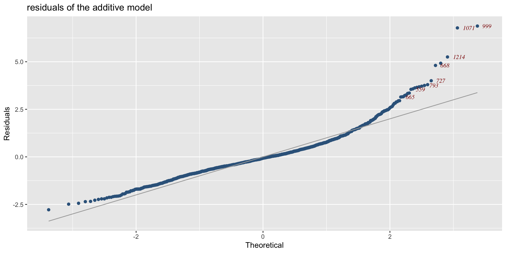

GAMLSS-RS iteration 1: Global Deviance = 19556.8715 eps = 0.069510
GAMLSS-RS iteration 2: Global Deviance = 19556.8715 eps = 0.000000 Regression Models
how to adapt for climate change challenges
Mikis Stasinopoulos (University of Greenwich)
Introduction
machine learning modelsas they stand, are not always suitable for environmental datagoodness of fitmeasure should represent more closely thequestionin handInterpretationof the model is important for improvements in scientific knowledgethis talk is my
personalopinion on how regression models should adapt for environmentaldata
Data
data; used to mean a file with a lot of;
numbers, (but data today could have)text,pixels, or- any other file that containing
information.
data analysis is the art of extraction information from the data.
Regression model deal with tabular data
Tabular data
| obs number | y | x1 | x2 | x3 | … | xr-1 | xr |
|---|---|---|---|---|---|---|---|
| 1 | y1 | x11 | x12 | x13 | … | x1r-1 | x1r |
| 2 | y2 | x21 | x22 | x23 | … | x2r-1 | x2r |
| 3 | y3 | x31 | x32 | x33 | … | x3r-1 | x3r |
| … | … | … | … | … | … | … | … |
| n-1 | yn-1 | xn-11 | xn-12 | xn-12 | … | xn-1r-1 | xn-1r |
| n | yn | xn1 | xn2 | xn3 | … | xnr-1 | xnr |
Data
The size of observations \(n\) keeps growing over time
the size of the variables \(r\) is also increase
traditionally \(n > r\) but now other situations are common
there is
informationin data before start modelling we need to explore (see the packagegamlss.prepdata)data
partitionhelps the model building?
Data Partition
data partition help with
checking for
over-fittinghelping to improve
inferenceby providing extra information about variations
there two types of partition
singlepartition (holdout samples)multiplepartitions (bootstrapping, K-fold cross validation )
Data Partition (2)
Examples of data
toxicityin USA lakes (Merder et al. 2023)pollutionin the oceans using satellite images (Merder et al. 2024)arsenicin EU soil see (Fendrich et al. 2024)monitor liver functions during
pregnancy(Judah et al. 2025)phosphorusin the soil in EU (current work)
Examples liver function
Example; liver function 2
the response is
ALPAlkaline Phosphatase an enzyme found throughout the body, but especially in: Liver, Bones, Kidneys, Intestines, Placenta (during pregnancy)the x-var is
gestation ageTo analyse data we use
models.
Models
- a
modelis a simplification of reality.
- toy models,
- fashion models
- mathematical models. where mathematical equations are used to describe reality.
Models (2)
all models are wrong but some are useful.– George Box (1979)
whether a model is useful depends on the
purposeof the study.is the
modeladequate to answer thequestion?
question
the
questionis thehypothesis, thepurposeof the study; It is what the researcher tries to understand and answerthe next question is:
can the
dataor themodelanswer the question in hand?if the answer is
yesthenhow.can be answered by
regression?regression is an
input-outputmodel.
Input-output
we have information on variable(s) \(X\), the input variables,
and we want to use this information to say something about the variable(s) \(Y\) the output.
Input-output model are
supervisedlearning model (since aresponsevariable exist)
Input-output (2)
Breiman (2003)
\[ X {\longrightarrow} \fbox{NATURE} {\longrightarrow} Y, \ \textit{(complex)} \]
\[ X {\longrightarrow} \fbox{Model} {\longrightarrow} Y \ \textit{(simpler)} \]
\[ X {\longrightarrow} \fbox{f()} {\longrightarrow} Y \ \textit{(mathematical model)} \]
the task is to unmask the unknown
function\(f()\).a compete unspecified function lead to AI otherwise we rely on
assumtions
Assumptions
an
assumptionis an axiomatic statement which need to be accepted for the model to work.the reasoning is that:
if the assumptions are correct then the model should be OKmathematical
assumptionsalso helpintepretationof a model i.e.- a
linearassumption for \(f()\) is \(\alpha+\beta_1 x_1 + \ldots + \beta_p x_p\) additiveassumption for \(f()\) is \(\alpha+f_1(x_1) + \ldots + f_p(x_p)\)
- a
Assumption: linear model

The Linear Model assumtions
\(ALP \sim NO(\mu,\sigma)\)
\(\mu=\alpha +\beta \: \text{ga}\)
\(\sigma\)= constant
\(ALP\) observations are independent
Assumption: additive model
GAMLSS-RS iteration 1: Global Deviance = 19305.9535 eps = 0.081448
GAMLSS-RS iteration 2: Global Deviance = 19304.412 eps = 0.000079
GAMLSS-RS iteration 3: Global Deviance = 19304.4115 eps = 0.000000 Assumptions (2)
explicitassumptions, usually mathematical, are easy to checkimplicitassumptions (more difficult to check)incorrectassumptions could lead to questionable scientific discoverieswe should check
explicitassumptions usingdiagnostictoolsalgorithmic modelsmake mostly implicit assumptions about the function \(f()\).
Algorithmic model
an
algorithmic modelis a step-by-step computational procedure designed to perform a task by systematically transforming inputs into outputs according to a defined set of rules.no
explicitassumptions for \(f()\) are needed but a lot ofimplicitassumptions depending on the algorithmalgorithmic models (like mathematical models) can be deterministic or
stochastic
Stochastic model
a
stochasticmodel is a (mathematical or algorithmic) model which incorporates randomness so its output is not completely predictable even with the same starting conditions.stochastic regression models contain
probabilisticassumptions on how the input-output model is generated.the minimal assumption for a regression model is about the behaviour of the
responsein
linearmodels \(\textbf{y}=\textbf{X}\boldsymbol{\beta}+e\) where \(e_i \sim N(\boldsymbol{0}, \sigma^2)\) is the classical stochastic model.
Stochastic model (2)
notall problems need a stochastic componentStochastic models are often used because many natural, social, and physical systems have inherent variability.
a stochastic algorithmic model is often called a
machine learningmodel
Machine Learning
a typical supervised machine learning model has the form \[Y= g(X)+ \epsilon\] where the error \(\epsilon\) is assumed to be an
identical and independently distributedrandom variableimplicitly it is assumed that the error is a
symmetricalrandom variable.
Machine Learning (2)
- as an
input-outputmodel can be written as
\[
X {\longrightarrow} \fbox{f()} {\longrightarrow} E(Y)
\] where the \(E(y)\) is the expected value of \(Y\) plus
implicit assumptions for \(f()\) and
explicit
symmetricalandindependentassumption for \(\epsilon\)only the
meanis modelled
The Machine Learing assumtions
\(ALP \sim NO(\mu,\sigma)\)
\(\mu= f(\text{ga})\)
\(\sigma\)= constant
\(ALP\) observations are independent
all are implicit assumptions that some machine learners
forgetor do notbotherto tell
regression tree fit
GAMLSS-RS iteration 1: Global Deviance = 18752.8733 eps = 0.107763
GAMLSS-RS iteration 2: Global Deviance = 18680.5714 eps = 0.003855
GAMLSS-RS iteration 3: Global Deviance = 18680.5446 eps = 0.000001 Black box
algorithm models could be
black box’sthey are two main reasons for a black box
the function \(f()\) is too
complicatedto explainthere are
proprietaryreasons
black boxagainstinterpretabletransparent,explainable,comprehensivemodelsthe
questionin hand should determine whether the model should beinterpretable.
Black box (2)
“Stop explaining black box machine learning models for
high stakes decisionsand useinterpretablemodels instead” (Rudin 2019)the argument came from the fact that among all adequate models (the
Rashomon set) few areinterpretable(Rudin et al. 2024)
neural network fit
GAMLSS-RS iteration 1: Global Deviance = 19395.3504 eps = 0.077195
GAMLSS-RS iteration 2: Global Deviance = 19342.6355 eps = 0.002717
GAMLSS-RS iteration 3: Global Deviance = 19341.3729 eps = 0.000065
GAMLSS-RS iteration 4: Global Deviance = 19341.3725 eps = 0.000000 
random forest fit
GAMLSS-RS iteration 1: Global Deviance = 19296.2132 eps = 0.081912
GAMLSS-RS iteration 2: Global Deviance = 19294.2941 eps = 0.000099
GAMLSS-RS iteration 3: Global Deviance = 19294.2941 eps = 0.000000 
middle talk summary
dataassumptionsmodelmathematicaloralgorithmicinterpretableorblack box
How we can compare the
accurancybetween different models?this is done usually using a
riskfunction
Risk functions
A
riskfunction measure theaccuracyof the model. [it measure how accurate \(f()\) is for a specific risk function]a
riskis defined as the expected loss \(\ell\). That is, we define a lost function \(\ell\) first as a function of the response \(Y\) and the explanatory variable \(X\) and then we take expectations: \[R(f) = \mathbb{E}_{X,Y} [ \ell(g(X), Y) ]\] -\(g()\) is the model,
loss functions
squarederror : \((y_{true} - y_{fitted})^2\)absoluteerror: \(\left|y_{true} - y_{fitted} \right|\)informationbased error: \(- \int_{-\infty}^\infty f_{true}(y|x) \log f_{fitted}[y, \theta(x) ] dy\)risk functions could include
penaltytermsempirical risk: instead of taken expectation using the unknowntruedistribution we just average over the observations i.e. \(\frac{1}{n} \sum_{i}^{n} (y_{true,i} - y_{fitted,i})^2\)
Empirical Risk
the
empirical riskis thelog likelihoodfor information based measurethe evaluation of the empirical risk is more effective if it is done on
out of bagdata, ortestdatathe square error and absolute error risk functions tell us how
farthe \(Y\) is from its estimatedexpected value\(E(Y)\). They tell usnothingon how well other part of the distribution for \(Y\) are fitted i.e. the tailsthe
empirical riskshould be always related to thequestionin hand.
comparing models
information based criteria:
- AIC
AIC df
Reg_Tree 18704.54 12.000000
Add_Mod 19315.91 5.749771
NN_Mod 19407.37 33.000000
Ran_For 19498.29 102.000000
Lin_Mod 19562.87 3.000000- BIC
AIC df
Reg_Tree 18772.05 12.000000
Add_Mod 19348.26 5.749771
Lin_Mod 19579.75 3.000000
NN_Mod 19593.02 33.000000
Ran_For 20072.10 102.000000degrees of freedom
the
degrees of freedomof the model is a measure of model complexityfor mathematical models the df’s are the
numberof parameters fitted in the modelfor algorithmic models the df’s are difficult to define
- what if we do not know the df’s?
Mean Square error
data are separated to
trainingandtestdata setsMean Square Error (
testobservations)
models MSE
[1,] "Add_Mod" "726.698"
[2,] "NN_Mod" "728.525"
[3,] "Ran_For" "730.387"
[4,] "Reg_Tree" "738.687"
[5,] "Lin_Mod" "796.054"- Mean Absolute Error (
testobservations)
models MAE
[1,] "Add_Mod" "18.9538"
[2,] "Ran_For" "19.0120"
[3,] "NN_Mod" "19.0525"
[4,] "Reg_Tree" "19.0789"
[5,] "Lin_Mod" "20.4588"prediction deviance
deviance \(-2 \log Likelihood\) (test observations)
models pdeviance
[1,] "Reg_Tree" "12518.98"
[2,] "Add_Mod" "12904.79"
[3,] "NN_Mod" "12908.19"
[4,] "Ran_For" "12911.92"
[5,] "Lin_Mod" "13029.86"in order to produce the predictive deviance results we assume that the distribution for the response is
normal.Is this a sensible assumption?
let us test it
qq-plot of the prediction residuals
The centiles of the “best” model
Generalised Linear models
- the mathematical model of Nelder and Wedderburn (1972) dominated the 1980’s
- as
input-outputmodel it can be written as \[ X {\longrightarrow} \fbox{f()} {\longrightarrow} E(Y) \] where \(g()= g(\eta=\textbf{X}\boldsymbol{\beta})\) and \(g()\) is called alinkfunction to make sure that values of \(\mu=E(Y)\) are in the right range
Generalised Linear models (2)
\[\begin{split} \textbf{y} & \stackrel{\small{ind}}{\sim } D( \boldsymbol{\mu}, \phi) \nonumber \\ g(\boldsymbol{\eta}) &= \textbf{X}\boldsymbol{\beta} \nonumber \\ \end{split}\]where D() is a distribution belonging to the exponential family
- normal, gamma, inverse Gaussian
- Poisson, bimomial- there were two major problems with the assumption for \(g(\boldsymbol{\eta})\)
Problems with \(\mu(\boldsymbol{\eta})\)
\(g(\boldsymbol{\eta})\) allows only
lineareffects [fornon-linearuse Generalised Additive Models,GAM’s Hastie and Tibshirani (1990)]interactionsbetween terms have to be declared explicitly but for large number of explanatory variables this could be difficult.Note that some
MLmodels fit interactions as part of their algorithm i.e. regression trees, neural networks
Problems with \(D( \boldsymbol{\mu}, \phi)\)
exponential family has nice theoretical properties for the mean of \(y\), \(\left[ E(y) \right]\)
if a second parameter \(\phi\), exist it is treated as a
nuisanceby ignoring \(\phi\) we have problems with:
heterogeityandover/under-dispersionskewnessandkurtosis(because are fixed)
distributional regressionlike GAMLSS can correct those problems
GAM fit

GAM residuals

GAMLSS
Rigby and Stasinopoulos (2005) \[X {\longrightarrow} \fbox{$\boldsymbol{\theta}$()} {\longrightarrow} D(Y|\boldsymbol{\theta}(X)),
\] where \(D(Y|\boldsymbol{\theta}(X))\) represents the natural error distribution of \(Y\) (conditional on the \(X\)).
The task of
Distributional Regressionis to find ;- how the x’s effect the parameters of the distribution i.e \(\boldsymbol{\theta}(X)\) and
- the appropriate distribution for the response i.e. \(D(Y|\boldsymbol{\theta}(X))\)
GAMLSS fit

GAMLSS residuals

Toxicity in USA Lakes
Arcenic in EU soil
Polution in th Oceans
Kings Colege data on pregnancy

Conclusions
the
data, themodel, thequestionare interrelated, you can not consider one without the other in order to extract the right information.if the
questiondoes not involve the mean of \(Y\) aGAMLSSmodel seems appropriatedistributional regression model could answer
questionsthatMLandAIcan not
Conclusions (2)
interpretablemodel are important for scientific progress and easier to check usingdiagnosticstoolsdistributional regressions allows the estimation of
exceedance probabilitiesand more generallyinterval forecastsomething that not all the classical ML model can dodistributional regression can answer questions about all aspects of the behaviour of \(Y\)
the team
| working party | current | past |
|---|---|---|
Gillian Heller |
Konstantinos Pateras |
Popi Akantziliotou, |
Fernanda De Bastiani |
Paul Eilers , Kevin Burke |
Vlasios Voudouris, Nadja Klein |
Thomas Kneib |
Nikos Kametas |
Marco Enea, Nicoleta Mortan |
Achim Zeileis |
Tim Cole | Daniil Kiose, Florian Ziel |
Andreas Mayr |
Artur Fredrich |
Dea-Jin Lee, Peru Muniain |
Nicolaus Umlauf |
Luiz Nakamura |
María Xosé Rodríguez-Álvarez |
Reto Stauffer |
Elisa Van Eynde |
Majid Djennad |
Robert Rigby |
Julian Merder |
Nikos Georgikopoulos |
Mikis Stasinopoulos |
Abu Hossain | Raydonal Ospina, Fiona McElduff |
packages
there are two packages in
Rgamlss(older version) andgamlss2later version can be accessed from gamlss universe
the original paper is in web-site
end

 The Books
The Books
reference
www.gamlss.com
Box, G. E. P. 1979. “Robustness in the Strategy of Scientific Model Building.” Robustness in Statistics 1: 201–36.
Breiman, Leo. 2003. “Statistical Modeling: The Two Cultures.” Quality Control and Applied Statistics 48 (1): 81–82.
Fendrich, Arthur Nicolaus, Elise Van Eynde, Dimitrios M Stasinopoulos, Robert A Rigby, Felipe Yunta Mezquita, and Panos Panagos. 2024. “Modeling Arsenic in European Topsoils with a Coupled Semiparametric (GAMLSS-RF) Model for Censored Data.” Environment International 185: 108544.
Hastie, T. J., and R. J. Tibshirani. 1990. Generalized Additive Models. London: Chapman & Hall.
Judah, Hannah R, Robert A Rigby, Mikis D Stasinopoulos, Konstantinos Pateras, Mussarat N Rahim, Michael A Heneghan, Kypros H Nicolaides, and Nikos A Kametas. 2025. “Reference Ranges for Liver Function Tests in Pregnancy Controlling for Maternal Characteristics.” American Journal of Obstetrics and Gynecology.
Merder, Julian, Ted Harris, Gang Zhao, Dimitrios M Stasinopoulos, Robert A Rigby, and Anna M Michalak. 2023. “Geographic Redistribution of Microcystin Hotspots in Response to Climate Warming.” Nature Water 1 (10): 844–54.
Merder, Julian, Gang Zhao, Nima Pahlevan, Robert A Rigby, Dimitrios M Stasinopoulos, and Anna M Michalak. 2024. “A Novel Algorithm for Ocean Chlorophyll-a Concentration Using MODIS Aqua Data.” ISPRS Journal of Photogrammetry and Remote Sensing 210: 198–211.
Nelder, J. A., and R. W. M. Wedderburn. 1972. “Generalized Linear Models.” Journal of the Royal Statistical Society: Series A 135: 370–84.
Rigby, R. A., and D. M. Stasinopoulos. 2005. “Generalized Additive Models for Location, Scale and Shape (with Discussion).” Applied Statistics 54: 507–54.
Rudin, Cynthia. 2019. “Stop Explaining Black Box Machine Learning Models for High Stakes Decisions and Use Interpretable Models Instead.” Nature Machine Intelligence 1 (5): 206–15.
Rudin, Cynthia, Chudi Zhong, Lesia Semenova, Margo Seltzer, Ronald Parr, Jiachang Liu, Srikar Katta, Jon Donnelly, Harry Chen, and Zachery Boner. 2024. “Amazing Things Come from Having Many Good Models.” arXiv Preprint arXiv:2407.04846.